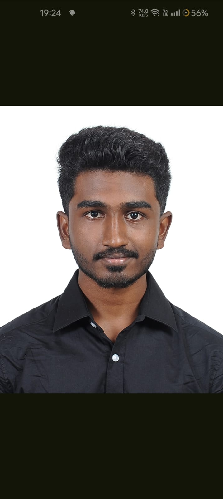

Summary:
I'm a passionate Computer Science developer and aspiring entrepreneur with a knack for turning ideas into real-world solutions. With experience in Java, Python, and C, I've built scalable applications and efficient systems from the ground up. I love tackling complex problems, collaborating with others, and applying my technical skills to create innovative products. My entrepreneurial mindset drives me to constantly explore new technologies, enhance my skills, and push the boundaries of what's possible. I'm excited to contribute my expertise to meaningful projects while learning and growing along the way.
Education:
- Schooling:Bharathi Matric Higher Secondary School(2023)
- Secured 97.16% in 12th grade with centums in chemistry,physics,computer science
- Currently persuing BE CSE in PSG COLLEGE OF TECHNOLOGY
- CGPA til sem 3:8.59
Soft Skills:
Teamwork,Positive attidue,calm under pressure ,taking responsibility
Technical Skills:
Languages Known:
C,Python,Java
Awards & Certifications:
Extra curricular activities:
- Event resource managment Member of Students union:
- Conducted intra college event intrams
- Conducted and organised inter college event Kriya
- Member of CSEA(computer science and association)
- Conducted and organized coding events
Projects:
- Online electricity Billing System:Electricity bill can be paid online and all the monthly bills can be used .Developed in Java
- Capstone Project:Built an online resume using only html
about
Contact
{kind=link}
{kind=link}
{kind=link}